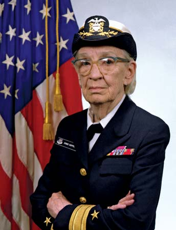

Rear Admiral Grace Hopper

Rear Admiral Grace Brewster Murray Hopper was an American computer scientist
who was born in 1906 in New York City.
Even when she was very young, Grace was curious about all sorts of things. At the
age of seven, she wanted to know how her alarm clock worked, so she dismantled
seven clocks in the house to see inside them before her mother could stop her! After
that, she was only allowed to pull apart her own clock.
When the United States entered the Second World War, Grace wanted to lend her aid
to her country; but she was rejected by the navy several times - once for being too
small and once for being too old. Grace never gave up; in 1943 she joined the US Naval
Reserve.
Because of her experience, Grace was selected for a very special and secret project - the navy was building the first ever
electromechanical computer in the United States in the hope it would help them win
the war. But they needed someone who could program it first!
Grace had a skill for taking complicated ideas and translating them into information that anyone could understand. She has been recognised in many amazing ways for her contributions to computer science:
- Grace Hopper was awarded 40 honorary degrees from universities worldwide
during her lifetime.
- The Navy named a guided-missile destroyer USS Hopper after her.
- Google in 2020 named its new undersea network cable 'Grace Hopper', the cable
will connect the US, UK and Spain!
- Her legacy was an inspiring factor in the creation of the Grace Hopper
Celebration of Women in Computing. Held yearly, this conference is designed to
bring the research and career interests of women in computing to the forefront.
. Grace was once quoted as saying “The only phrase I've ever disliked is,
'But we've always done it that way.' I always tell young people, 'Go ahead and do it.
You can always apologize later.'”